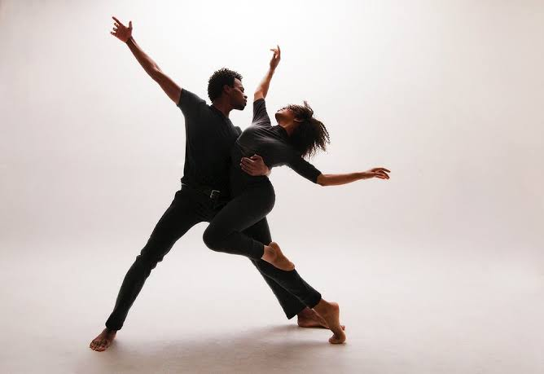

FUNDAMENTALS
It is a fundamental move not only for ballet technique, but also for other dance styles. Plies are so important, because they are used to start and finish jumps and turns, to provide spring and absorb shocks, and as an exercise to develop balance and to loosen muscles. Everything in ballet has plié and everything that a dancer performs starts and finishes with it. Even if it is just a “simple” movement, the plié needs to be executed in the correct way, considering also the dancer’s ability. It is executed holding the spine completely vertical above the legs and the hips facing forward while in a turned out position, engaging the gluteus muscles. During the execution it is so important to focus on the alignment of the legs turned-out from the hip, the knees usually above the second toe of the foot. It is a powerful movement that helps dancers to protect their body from injury . A very common mistake, in fact, is to force the feet into an unnatural position, over turnout, with the arch of the foot flat on the floor and the bodyweight on the big toe only. Pliés can be in the form of demi-plié, executed with heels on the floor, and grand-plié, where the bending action is deeper, so is executed, except in second position, with the heels rising. In ballet technique plié exercise is usually executed at the beginning of the barre, because it helps to warm up the feet joints, knees, ankles and hips. It helps to develop the flexibility of the muscle in the lower body. The action of demi-plié at the barre is also important because it helps the dancer to develop a proper technique. It increases the softness and the flexibility of the joints and muscles and also makes the tendons elastic. It is also important for the development of balance, to find the inner center line. It increase muscle memory to execute an accurate, clean and not dangerous jump. Practicing it in all the five positions of the feet helps the dancer to create a better connection between steps in the center or while performing on stage. All ballet classes end with a reverence, with curtsies at the end; so pliés accompany dancers basically from the beginning of the barre to the end of class. Therefore plié is so important not only to build stronger muscle and technique. It is also good for the dancer’s mind. The coordination of arms, eye movement and breath during plié begins the process of mental focus and concentration. It is usually the exercise where the dancer can perform a little bit and show her/his musicality, because listening to music can help to make the movement soft and smooth. It can help the dancer to become a very good and talented artist. It prepares the body, mind and spirit from the barre until the bowse to the audience.